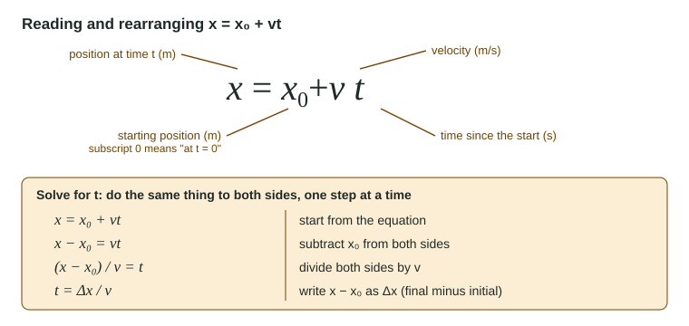

If algebra 2 made you nervous, here is the good news: physics uses only a small part of it, again and again. You will read an equation, solve it for one symbol, and put numbers in. This page shows how to do each step so that it works every time, and how to check your answer before anyone else does.
Symbols are quantities
In math class, x is an unknown number. In physics, each letter is a variable that stands for a physical quantity, and it carries a unit. In the equation for steady motion,
x = x₀ + vt
x is a position in meters, v is a velocity in m/s and t is a time in seconds. The product vt has units (m/s)(s) = m, so every term in the equation is in meters. That is no accident: you can only add or set equal quantities with the same unit.

Subscripts and Δ
A subscript is a small label below a symbol. It never multiplies. x₀ (read "x naught") means the position at the start, when t = 0. v₁ and v₂ are two different velocities, for example in two parts of a trip.
The Greek capital letter Δ (delta) means "change in". It is always the final value minus the initial value:
Δx = x − x₀ ΔT = T(final) − T(initial)
A change can be negative. If the temperature falls from 18.0 °C to 11.5 °C, ΔT = 11.5 − 18.0 = −6.5 °C. The sign is information: it says the quantity went down. Δ is one symbol; never treat it as a number multiplying x.
Rearranging: undo in reverse order
An equation stays true if you do the same thing to both sides. To get one symbol alone, look at what has been done to it, then undo those operations in reverse order.
Worked example 1. Solve x = x₀ + vt for t.
| Math | What you did |
|---|---|
| x = x₀ + vt | Start. t is multiplied by v, then x₀ is added. |
| x − x₀ = vt | Undo the last step first: subtract x₀ from both sides. |
| (x − x₀)/v = t | Undo the multiplication: divide both sides by v. |
| t = Δx/v | Tidy up, writing x − x₀ as Δx. |
Writing a reason beside each line is the "two-column" style the exam readers recommend. It slows you down just enough to stop sign errors.
Symbols first, numbers last
Solve for the unknown in symbols, then substitute the numbers with their units, once. This has three advantages. You make fewer arithmetic mistakes. You can see how the answer depends on each quantity (t = Δx/v gets smaller when v gets bigger). And the exam often asks for the symbolic expression itself, written in the given quantities, with no numbers at all.
Worked example 2. A ball starts at x₀ = 2.0 m and rolls at a steady v = 1.2 m/s. When does it reach x = 8.0 m?
From worked example 1: t = (x − x₀)/v.
Substitute: t = (8.0 m − 2.0 m) ÷ 1.2 m/s = 6.0 m ÷ 1.2 m/s = 5.0 s.
Units: m ÷ (m/s) = s. A time, as it should be.
Check with units
Every term of an equation must have the same unit, and so must your answer. This catches the most common slip, an upside-down fraction. If you write t = v/d, the units are (m/s)/m = 1/s, which is not a time. Make the check a habit: it takes five seconds and saves whole parts of a free-response answer.
A second check is common sense. In t = d/v, a faster speed should give a shorter time, and it does, because v is on the bottom.
Common slips
- Undoing in the wrong order: from x = x₀ + vt, dividing by v first leaves x₀/v, which is harder to handle. Undo the addition first.
- Adding x₀ and v before multiplying: in x₀ + vt, only v is multiplied by t.
- Δ as initial minus final. It is always final minus initial.
- Dropping units while substituting, then losing track of whether the answer is in m or cm.
Spot a mistake on this page?